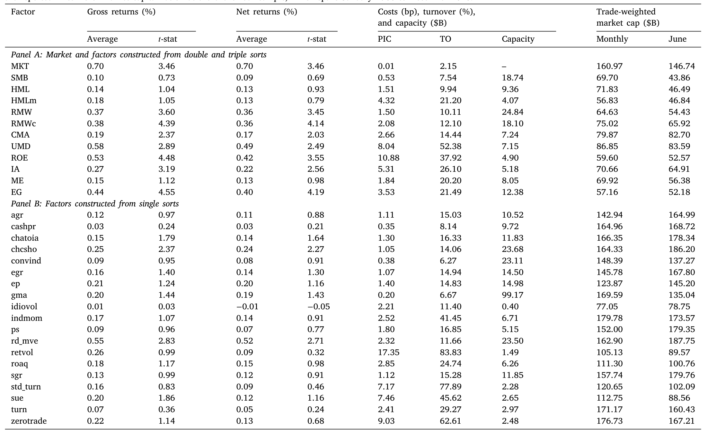
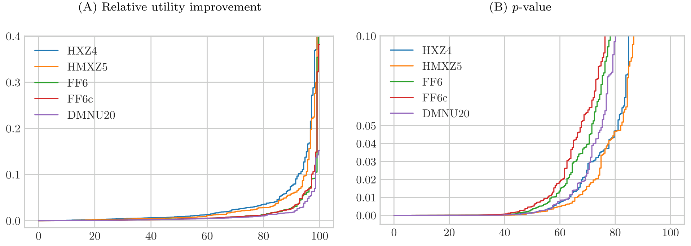
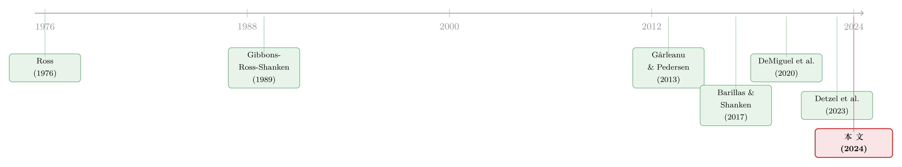

没有唯一的冠军：当「交易冲击」把因子模型的擂台，按体量分成了三个
本文读的是 Li, DeMiguel & Martín-Utrera (2024, Journal of Financial Economics)：一旦把大投资者真实面对的「价格冲击成本（price impact）」放进来，比较因子模型就不再有一个放之四海皆准的冠军——有效前沿由直线变成了一条严格凹的曲线，于是「谁最好」取决于你有多大。实证上，Hou et al. (2021) 的五因子模型最适合高风险厌恶（小）投资者、Fama–French (2018) 现金版六因子模型最适合中等投资者、而 DeMiguel et al. (2020) 的高维模型只在低风险厌恶（大）投资者那里才真正胜出。
1 引言：因子动物园里，谁是冠军？
过去二十年，资产定价领域最热闹的事情，是「因子动物园（factor zoo）」越长越大。每隔一阵就有人端出一个新的多因子模型，声称自己能更好地解释横截面收益。于是一个朴素的问题就被反复地问出来：到底哪个模型更好？
经济学家给这个问题找到了一把看似干净利落的尺子。Gibbons、Ross 和 Shanken（1989，下称 GRS 检验）证明，一个模型「好不好」，可以由它的因子能不能张成（span）一组测试资产的投资机会集来衡量——而这个能力，恰好可以写成一个关于截距 alpha 的二次型，它度量的正是投资者在已有这些因子之外、再用上测试资产能多赚到的平方夏普比率（squared Sharpe ratio）。Barillas 和 Shanken（2017）把这把尺子磨得更锋利：在「一个好模型不仅要张成测试资产、还要张成别的模型里的因子」这一信条下，他们证明测试资产其实无关紧要，比较模型只需要比谁的因子组合能攒出更高的平方夏普比率就够了。
一个模型，一个数字，一个冠军。多干净。
「平方夏普比率是唯一的充分统计量」——这是这条文献的隐性共识，也是本文要动手拆掉的那块基石。
2 第一次松动：交易是有成本的
接着，一个自然的问题被 Detzel、Novy-Marx 和 Velikov（2023）提了出来：上面这套逻辑，忘了交易要花钱。
他们的论证很本质。因子模型背后站着的是 Ross（1976）的套利定价理论（arbitrage pricing theory, APT）：能带来异常收益的机会会吸引套利资本，直到机会消失。可问题在于——套利者只会去追逐那些扣掉交易成本之后仍然有利可图的机会。所以，比较模型时，应该比的是「净收益」的平方夏普比率，而不是账面上的毛收益。
那加进交易成本，会不会把整个比较框架推翻？Detzel et al.（2023）用的是比例交易成本（proportional transaction costs）——每买卖一块钱，按固定比例（比如买卖价差）付一笔费用。本文作者在第 2.3 节里替这套做法补了一个干净的理论证明：
$$\theta^* = \Sigma^{-1}\mu / \gamma, \qquad \mathrm{MVU}_\gamma = \frac{\mu^\top \Sigma^{-1}\mu}{2\gamma}, \qquad \mathrm{SR}^2 = 2\gamma\,\mathrm{MVU}_\gamma$$
在比例成本下，有效前沿依然是一条直线——前沿上每一点的「净夏普比率」都相等（命题 2），记为 \(\mathrm{SR}_{PTC} < \mathrm{SR} = \sqrt{\mu^\top \Sigma^{-1}\mu}\)。也就是说，平方夏普比率仍然是那个充分统计量，仍然只有一个冠军。Detzel et al.（2023）的实证因此站得住脚。
到这里，故事似乎只是「把成本扣一下」，结论纹丝不动。
3 真正关键的一步：大投资者面对的不是比例成本，而是「冲击」
但真正关键的一步在于：比例成本，是散户的成本。
管理着市场上绝大部分资本的，是大型机构投资者。Gârleanu 和 Pedersen（2022）指出，2017 年机构投资者持有了大约 50% 的美国股票市场。对这些巨鲸来说，主要的交易成本根本不是买卖价差，而是价格冲击（price impact）——你的单子太大，还没成交完，价格就已经被你自己推走了。Edelen、Evans 和 Kadlec（2007）给出过一个刺眼的拆分：价格冲击占共同基金总交易成本的 65%，而比例成本（买卖价差）只占 17%。
价格冲击和比例成本，差在哪里？差在规模的非线性。比例成本里，交易额翻倍、成本就翻倍；可价格冲击里，交易额翻倍、成本会翻得更多——因为你越大的单子把价格推得越远。本文把这一点写成了价格冲击成本函数的定义（定义 2）：
$$f(c\theta) > c\,f(\theta) \quad \text{for all } \theta \neq 0 \text{ and } c > 1.$$
这个不等式就是全文的「分水岭」。它说的是：把仓位 \(\theta\) 整体放大 \(c\) 倍，成本 \(f(c\theta)\) 会严格超过 \(c\) 倍。一个最常用的设定是：价格冲击线性于交易量（Korajczyk and Sadka, 2004; Novy-Marx and Velikov, 2016），于是冲击成本是交易量的二次型，正好满足上面的超线性。
别小看这一条不等式。比例成本是线性的（一次齐次），它对有效前沿的形状不构成扭曲；而价格冲击是超线性的（凸的），它会把前沿掰弯。下一节我们就看它怎么掰。
4 模型：从「直线前沿」到「凹前沿」，一步步推
这是一篇带理论模型的论文，核心张力全在模型里。我们把它一步步铺开。
4.1 设定
市场上有 \(N\) 只股票，\(t\) 时刻收益向量 \(r_t \in \mathbb{R}^N\)，无风险利率 \(r_{f,t} \in \mathbb{R}\)。设 \(X_t \in \mathbb{R}^{N\times K}\) 的每一列是某个因子组合在 \(t\) 时刻的权重，那么 \(K\) 个因子在 \(t+1\) 的收益向量是
$$F_{t+1} = X_t^\top (r_{t+1} - r_{f,t+1}\,e) \in \mathbb{R}^K,$$
其中 \(e\) 是全 1 向量。每个因子都是超额收益（多空各投一块钱的长短组合，或市场超额收益），因此可以直接谈它们的均值 \(\mu = E[F]\) 与协方差 \(\Sigma = \mathrm{var}(F)\)。
投资者要解的，是一个扣掉交易成本的均值-方差（mean–variance）效用最大化问题。这就是全文的中心方程：
这里 \(\theta\) 的量纲是美元而不是权重，这一点很重要：因为不需要预算约束（因子都是超额收益），最优组合只通过绝对风险厌恶 \(\gamma\) 依赖于投资者。而
$$\gamma = \frac{\text{相对风险厌恶}}{\text{禀赋}}.$$
直觉是：越大的投资者，禀赋越大，绝对风险厌恶 \(\gamma\) 越低（Gârleanu and Pedersen, 2013）。低 \(\gamma\) 的大投资者愿意下更大的注去追更高的净期望收益，代价是更高的方差——以及，更高的价格冲击。
三条假设把问题框住：协方差 \(\Sigma\) 正定（假设 2.1）；成本函数 \(f(\theta)\) 连续、\(f(0)=0\)、\(\theta\neq 0\) 时 \(f(\theta)>0\)（假设 2.2）；以及 \(S=\{\theta\mid \theta^\top\mu - f(\theta)>0\}\) 非空，排除「干脆不投」的平凡情形（假设 2.3）。
4.2 没有成本 / 比例成本：前沿是直线
\(f(\theta)=0\) 时，问题（2）的解是 \(\theta^* = \Sigma^{-1}\mu/\gamma\)，沿着不同的 \(\gamma\) 扫一遍，就描出整条有效前沿——而它是均值-标准差图上的一条直线，因为每个均值-方差组合的夏普比率都一样，等于 \(\sqrt{\mu^\top \Sigma^{-1}\mu}\)（命题 1）。比例成本只是把这条直线的斜率压低成 \(\mathrm{SR}_{PTC}\)，前沿仍然是直线（命题 2）。直线上每一点夏普比率相同——这就是「一个数字定胜负」的几何根源。
4.3 价格冲击：前沿严格凹，于是没有「一个数字」
而当 \(f\) 满足那条超线性不等式（8）时，本文证明：有效前沿是严格凹的（strictly concave）。
凹意味着什么？意味着前沿上每一点的净夏普比率都不一样了。靠近原点的地方（小仓位、小投资者），价格冲击轻，净夏普比率高；越往外走（大仓位、大投资者），冲击越重，净夏普比率被啃得越狠。既然每一点的夏普比率都不同，那「用一个平方夏普比率来排序模型」这件事，逻辑上就塌掉了。
于是反转出现：比较模型的正确标尺，不再是夏普比率，而是「净价格冲击成本的均值-方差效用」本身——而它依赖于投资者的 \(\gamma\)。 同一对模型 \(A\) 和 \(B\)，对高 \(\gamma\) 的小投资者可能是 \(A\) 胜，对低 \(\gamma\) 的大投资者却可能是 \(B\) 胜。这正是论文摘要那句话的来历。
直觉藏在 Fig. 1 里：模型 \(B\) 的因子价格冲击更低，所以它更擅长服务那个敢下大注、因而被冲击成本卡得最紧的低风险厌恶投资者；而模型 \(A\) 的因子在小仓位下风险-收益更划算，所以它更适合那个仓位本来就小、冲击无所谓的高风险厌恶投资者。同一张前沿图上，两条切线，两个赢家。
这就是本文的第一个、也是最漂亮的贡献：它把 Barillas–Shanken（2017）那个「唯一充分统计量」的世界，证伪在了价格冲击面前——并给出替代标尺。作者还顺手把 GRS（1989）的 alpha 二次型、以及「测试资产无关」的结论，都推广到了带价格冲击的情形（测试资产依然无关，前提是仍坚持「好模型要张成别的模型的因子」这一信条）。
5 数据与实证：擂台被切成了三块
光有理论不够。本文的第二、第三个贡献，是把上面那套比较，做成了正式的统计检验（成对的嵌套/非嵌套检验，推广自 Kan and Robotti, 2009 与 Barillas et al., 2020；以及多模型检验，沿用 Barillas et al., 2020），然后真刀真枪地比了十个因子模型。
这十个模型是：CAPM（Sharpe 1964; Lintner 1965）、HXZ4（Hou et al., 2015）、HMXZ5（Hou et al., 2021）、FFC4（Fama–French 1993 + Carhart 1997）、FF5（Fama–French 2015）、FF6（Fama–French 2018）、BS6（Barillas and Shanken, 2018），外加用现金版经营盈利（cash-based operating profitability）构造的 FF5c、FF6c，以及一个高维模型 DMNU20——它装着 DeMiguel et al.（2020）发现的、在价格冲击下仍显著的 20 个因子。所有因子的描述性统计见下表。

Table 3: reports summary statistics for the 31 factors listed in Ta-
实证落到了两个发现上。
第一，在价格冲击下，模型表现不只取决于换手率，还取决于所交易股票的流动性。 Detzel et al.（2023）在比例成本下强调了换手率（turnover）；本文进一步指出：和 Fama–French 的对应因子相比，Hou et al.（2015, 2021）的投资与盈利因子不仅换手更高，还更依赖于交易市值更小、因而更不流动、价格冲击更大的股票。结果就是：在没有成本的世界里，HMXZ5 跑赢 FF6c；可一旦把价格冲击放进来，FF6c 反过来更胜一筹。（关于异象多空组合本身并非「流动性中性」这一点，可参见《流动性的方向感：异象多空组合，其实并不「流动性中性」》。）
第二，也是最核心的——模型的相对排名，取决于投资者的绝对风险厌恶。 高维模型 DMNU20 只有在张成大（低风险厌恶）投资者的投资机会集时，才显著跑赢低维模型。原因正是 DeMiguel et al.（2020）所说的交易分散化（trading diversification）：把许多因子组合在一起，再平衡时各因子要求的反向交易常常互相抵消，从而压低了交易成本；而且因子越多，这种抵消的好处越大。所以高维模型天然更适合那些被价格冲击卡得最紧的巨鲸。
把三块拼起来，擂台被干净地切成了三段：
- 高绝对风险厌恶（小投资者） → HMXZ5（Hou et al., 2021）
- 中绝对风险厌恶 → FF6c（Fama–French 2018，现金版盈利）
- 低绝对风险厌恶（大投资者） → DMNU20（DeMiguel et al., 2020）

Figure 4: demonstrates that the FF6c model performs relatively well at
作为第四个贡献，作者还用同一套检验，比较了这些模型张成 Chen 和 Zimmermann（2022）那 212 个异象的能力。结论大同小异，但不完全相同：比如在「高绝对风险厌恶」一档，按异象张成看是 FF6c 胜出，可按均值-方差效用看却是 HMXZ5 胜出——再次提醒我们，「张成测试资产」和「张成因子」未必给出同一个赢家（这正是 Barillas and Shanken, 2017 早就警示过的）。
6 文献脉络
这条线索的起点，是把「模型比较」变成一个可检验的统计问题：GRS（Gibbons, Ross and Shanken, 1989）把模型优劣写成 alpha 的二次型，背后是 Ross（1976）的 APT 信条——异常收益终将被套利抹平。沿着这条路，Barillas 和 Shanken（2017）把比较精简成「比平方夏普比率」，并论证测试资产无关。

转折来自交易成本。一边，Gârleanu 和 Pedersen（2013）把带可预测收益与交易成本的动态组合框架立了起来，让「成本如何影响最优持仓」有了语言；另一边，DeMiguel et al.（2020）用交易成本给「高维因子模型」找到了经济学理由——交易分散化。Detzel et al.（2023）把交易成本正式塞进模型比较，但用的是比例成本。本文站在这两股力量的交汇处，把焦点从比例成本切换到价格冲击成本，证明在这里平方夏普比率不再充分、比较标尺必须换成「净价格冲击的均值-方差效用」、而赢家随投资者体量而变——这就是它在脉络中的位置。
（关于「因子动物园」本身从何而来、又该如何收缩，可参见《弱替代：因子动物园是从哪里冒出来的？》与《压缩横截面：因子动物园的尽头，不是更少的因子，而是更聪明的收缩》。）
7 评论与延伸（Q&A + 研究方向）
(a) 几个可能的疑问
Q：「价格冲击成本」和「比例交易成本」到底差在哪，凭什么前者就把结论翻了？
差在对仓位规模的反应。比例成本是线性的：\(f(c\theta)=c\,f(\theta)\)，放大仓位、成本等比例放大，前沿仍是直线，夏普比率仍充分。价格冲击是超线性（凸）的：\(f(c\theta)>c\,f(\theta)\)，因为大单自己把价格推走了。正是这个凸性把前沿掰成严格凹，导致前沿上每一点净夏普比率不同，于是「一个数字定胜负」失效。
Q：「绝对风险厌恶」为什么能和「投资者体量」画等号？
因为 \(\gamma=\) 相对风险厌恶 / 禀赋。两个人即便相对风险厌恶相同，禀赋大的那个绝对风险厌恶更低，愿意下更大的注。而下大注恰恰会撞上价格冲击。所以模型排名随 \(\gamma\) 变化，本质上是随「你管多大的钱」变化——这是把抽象参数翻译成现实身份的关键一跳。
Q：高维模型 DMNU20 既然在大投资者那里最好，为什么不干脆推荐给所有人？
因为它的优势来自交易分散化，只有当价格冲击「咬人」时才兑现成净收益。对高风险厌恶的小投资者，仓位本来就小、冲击微不足道，这时高维模型摊薄的不是成本而是信噪比，反而不如紧凑的 HMXZ5。优势是有条件的，条件就是 \(\gamma\) 足够低。
Q：作者忽略了卖空成本，这会不会颠覆结论？
作者明确承认忽略了卖空成本（脚注 1），理由是为了和 Detzel et al.（2023）的比例成本结果可比、并隔离价格冲击的效应。但 Nagel（2005）、Muravyev et al.（2022）的证据表明卖空成本会影响因子表现。由于多空因子的短腿往往集中在难借、难卖空的小盘股，把卖空成本加回来，可能进一步惩罚那些依赖小盘股的因子（如 HXZ/HMXZ 的投资、盈利因子）——方向上大概率强化、而非推翻本文结论，但量级待考。
Q：这是「样本内」的结论吗？换个样本还成立吗？
作者用 Fama–French（2018）和 Detzel et al.（2023）的自助法（bootstrap）做了样本外稳健性检验（脚注 2），结论与统计检验一致；并在内部附录里验证了对 banding 交易成本缓解策略的稳健性。当然，价格冲击参数的估计本身（市值、流动性的代理）仍是潜在的脆弱点。
Q：它跟用机器学习「榨干」海量特征的那条路（如 Jensen et al., 2022）是不是一回事？
不是。Jensen et al.（2022）也考虑了大机构面对的价格冲击，但目的是用机器学习从海量特征里提取收益预测；本文的目的恰恰相反——不是去发现新因子，而是给已有的资产定价模型提供一套在价格冲击下严格的比较方法学。一个在拓宽机会集，一个在校准标尺。
(b) 几个可能的研究问题与提案
1. 把这套「凹前沿 + 随体量变化的赢家」搬到公司债市场。 【经济故事】公司债的价格冲击远比股票严重——市场更碎、做市商库存约束更紧、大宗交易要找「接盘人」。如果股票里价格冲击已经能把因子模型擂台切成三段，那在公司债里，「谁是最好的信用因子模型」几乎注定取决于投资者体量。 【可行性】中。需要 TRACE 的成交与价格冲击估计、以及一组公司债因子（如 Glass-box 那类）。识别上可借用本文的成对/多模型检验框架，难点在于公司债价格冲击参数的稳健估计。（数据与方法上可呼应《把机器学习的黑箱拆成玻璃箱：公司债收益率能被「看懂」地预测吗？》。）
2. 把「赢家随 \(\gamma\) 变化」与真实持有人结构对接。 【经济故事】本文的 \(\gamma\) 是个参数。但现实里，每只股票/债券的边际定价者体量是可观测的（13F、保险持仓、共同基金）。能否检验：被低 \(\gamma\) 大投资者主导定价的资产，其横截面更接近高维模型的预测；被小投资者主导的，更接近紧凑模型？ 【可行性】中。需要把持有人结构映射到资产层面的「有效 \(\gamma\)」，识别上要处理持有与收益的内生性，可考虑指数纳入等准外生冲击。
3. 外资持有人是「大」还是「小」？——价格冲击视角下的外资因子配置。 【经济故事】外资机构往往是低 \(\gamma\) 的巨鲸，但又面临额外的信息与流动性劣势。若本文逻辑成立，外资在新兴或本地市场的最优因子模型，应当系统性地偏向高维、交易分散化更强的那一类。 【可行性】中偏低。需要外资持仓 × 个券流动性的匹配数据，跨境样本下价格冲击估计尤其困难，但机制清晰、值得一试。
4. 价格冲击参数的时变，会不会让「赢家」也随时间换人？ 【经济故事】流动性是时变的（危机期价格冲击飙升）。本文用的是无条件均值-方差。一个自然的推广是：在流动性枯竭的月份，凹性更强，高维模型对大投资者的优势应当被放大。 【可行性】高。直接在本文框架上做条件化/分样本（高低流动性期），数据与方法都现成，是一个低风险、可立刻动手的延伸。
我的判断
这篇论文最值钱的地方，是它证伪了一个被默认了二十年的隐性假设——「比较因子模型只需一个平方夏普比率」。它没有停留在「成本很重要」这种正确的废话上，而是精确地指出：是价格冲击的凸性、而非成本本身，把有效前沿从直线掰成了凹曲线，进而瓦解了单一充分统计量。从直线到凹曲线，再到「赢家随 \(\gamma\) 变化」，这条逻辑链推得干净、漂亮，且配上了可操作的统计检验和十个模型的实证，分量很足。
对识别（更准确地说，对结论稳健性）的担忧有三点。其一，价格冲击参数靠估计：市值、流动性的代理一旦偏差，三段擂台的切分点就会漂移，谁在哪一档胜出可能就此易主。其二，忽略卖空成本是为可比性付的代价，但多空因子的短腿恰是卖空最贵的地方，这个简化未必中性。其三，无条件均值-方差抹掉了流动性的时变——而价格冲击恰恰在最该被关心的危机时刻最凶。
我最想看到的后续，是把这套「凹前沿」搬进价格冲击天然更大的市场——公司债、信用、以及外资主导的资产——并把抽象的 \(\gamma\) 换成可观测的真实持有人体量。如果「最好的模型取决于你有多大」在那些市场里依然成立，那它就不只是一个方法学上的更正，而是一条关于「市场由谁定价、就该用谁的尺子」的实证规律。
参考文献
- Barillas, F., Kan, R., Shanken, J. (2020). Model comparison with Sharpe ratios. Journal of Financial and Quantitative Analysis 55(6), 1840–1874.
- Barillas, F., Shanken, J. (2017). Which alpha? Review of Financial Studies 30(4), 1316–1338.
- Barillas, F., Shanken, J. (2018). Comparing asset pricing models. Journal of Finance 73(2), 715–754.
- Carhart, M.M. (1997). On persistence in mutual fund performance. Journal of Finance 52(1), 57–82.
- Chen, A.Y., Zimmermann, T. (2022). Open source cross-sectional asset pricing. Critical Finance Review 11(2), 207–264.
- DeMiguel, V., Martin-Utrera, A., Nogales, F.J., Uppal, R. (2020). A transaction-cost perspective on the multitude of firm characteristics. Review of Financial Studies 33(5), 2180–2222.
- Detzel, A.L., Novy-Marx, R., Velikov, M. (2023). Model comparison with transaction costs. Journal of Finance (forthcoming).
- Edelen, R.M., Evans, R.B., Kadlec, G.B. (2007). Scale effects in mutual fund performance: The role of trading costs. Available at SSRN 951367.
- Fama, E.F., French, K.R. (2015). A five-factor asset pricing model. Journal of Financial Economics 116(1), 1–22.
- Fama, E.F., French, K.R. (2018). Choosing factors. Journal of Financial Economics 128(2), 234–252.
- Gârleanu, N., Pedersen, L.H. (2013). Dynamic trading with predictable returns and transaction costs. Journal of Finance 68(6), 2309–2340.
- Gârleanu, N., Pedersen, L.H. (2022). Active and passive investing: Understanding Samuelson's dictum. Review of Asset Pricing Studies 12(2), 389–446.
- Gibbons, M.R., Ross, S.A., Shanken, J. (1989). A test of the efficiency of a given portfolio. Econometrica 57, 1121–1152.
- Hou, K., Mo, H., Zhang, L. (2021). An augmented q-factor model with expected growth. Review of Finance 25(1), 1–41.
- Hou, K., Xue, C., Zhang, L. (2015). Digesting anomalies: An investment approach. Review of Financial Studies 28(3), 650–705.
- Jensen, T.I., Kelly, B.T., Pedersen, L.H. (2022). Machine learning and the implementable efficient frontier. Available at SSRN 4187217.
- Kan, R., Robotti, C. (2009). Model comparison using the Hansen-Jagannathan distance. Review of Financial Studies 22(9), 3449–3490.
- Korajczyk, R.A., Sadka, R. (2004). Are momentum profits robust to trading costs? Journal of Finance 59(3), 1039–1082.
- Lintner, J. (1965). Security, risk, and maximal gains from diversification. Journal of Finance 20, 587–615.
- Novy-Marx, R., Velikov, M. (2016). A taxonomy of anomalies and their trading costs. Review of Financial Studies 29(1), 104–147.
- Ross, S. (1976). The arbitrage theory of capital asset pricing. Journal of Economic Theory 13(3), 341–360.
- Sharpe, W.F. (1964). Capital asset prices: A theory of market equilibrium under conditions of risk. Journal of Finance 19, 425–442.